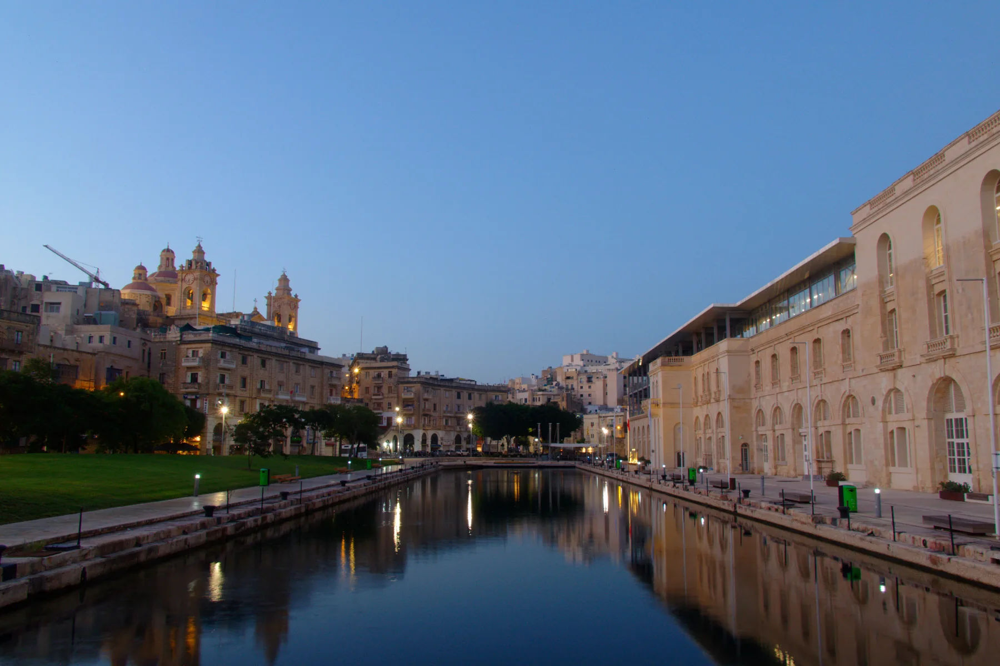

Public space and industrial-maritime history create a distinct frame. They do not prove a home's view, access or walking distance.

BORMLA · COSPICUA · MALTADock edge.
Dock edge.
City uphill.
Bormla's Dock 1 is the memorable threshold. The lived-in streets above it, the civic centre and the outer fortification edges need their own exact-address check.
ONE CITY, SEVERAL PHYSICAL CONTEXTS
Bormla and Cospicua are two names, not two editions.
Use Bormla for the locality after introducing its English name, Cospicua. Do not flatten the whole city into one level waterfront promise or absorb the neighbouring Three Cities into it.
Test gradients, steps, pavements, deliveries and the final walk to the actual entrance.
These require their own street-level reading. A locality label does not settle noise, parking or outlook.
Useful Three Cities context, separate localities. Their ferries, streets and services are never silently relabelled as Bormla.
VIEWING REALITY
Read the climb before you read the brochure.
The Local Council describes a city shaped by five hills and creek edges. That makes the exact route from a home more useful than a straight-line promise.
Start at the real entrance
Check the drop-off, pavement, steps and lighting at the building rather than at the locality centre.
Carry the route you would repeat
Test the path to the council, health centre or useful stop with the gradient and crossings included.
Return after the dock changes mood
Confirm street conditions in person. The hero image records one evening in 2023, not a permanent lighting or safety condition.
EVERYDAY ANCHORS
Three durable starting points, then a live check.
These official sources establish the locality and service context. Hours, eligibility, stops, departures and temporary changes stay on the live pages.
Bormla Local Council
The council publishes its office at Pjazza St Margerita. Use its current site for notices, opening information and administration.
Open the council information ↗Cospicua Health Centre
Primary HealthCare places the centre on Triq Ljun near Pjazza Gavino Gulia. Confirm current services, appointments and eligibility.
Open the current health-centre page ↗Three Cities routes
The operator currently identifies routes 3 and 4 for Isla, Kalkara and Bormla. Check the exact stop, direction, date and diversion live.
Plan with Malta Public Transport ↗ACTIVITIES WITH PLACE NAMES ATTACHED
Dock, church and house museum tell different stories.
Use each official source for present access. A heritage record is not a promise that a site is open, free, accessible or close to every home.
Dock Number 1
Public Works records Dock 1 as a Bormla public space and landmark. Event programming, access and conditions require a fresh local check.
Gate and parish context
The Culture directory lists Notre Dame Gate and the Immaculate Conception Parish Church among Bormla heritage points.
Bir Mula Heritage
Fondazzjoni Kottonera documents the historic house museum. Verify current opening and booking arrangements directly.
FOOD WITHOUT A “BEST OF” CLAIM
Three register records, not three recommendations.
The Malta Tourism Authority's Bormla filter returned these records when checked. The register supports names and addresses only; confirm current trading, menu, price, accessibility and booking directly.
137KBSG Restaurant
A verifiable Bormla register entry, not an editorial ranking or property-specific walking claim.
Cut Steak Restaurant
The waterfront address is register evidence only. Check the venue's present offer and operating details directly.
France M'En Bon
The same rule applies: address and name are recorded; quality, cuisine, hours and availability are not inferred.
Open the city and creek context only when you need it.
The map is a broad OpenStreetMap view centred on Bormla. It deliberately marks no listing, council boundary, route, distance, journey time, ferry line or waterfront guarantee and loads only after your click.
Bormla Local Council · Address Registrar · Primary HealthCare · Three Cities buses · Valletta Ferry · Dock 1 public-space record · Culture directory · Bir Mula Heritage · MTA restaurant register. Volatile services, access, departures and operating details require a fresh check.
Private preview. No ranking, fixed opening hour, property pin, boundary, guaranteed view, parking claim, accessibility promise, route, distance or journey time is implied.